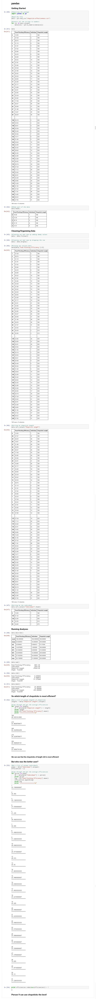

What is Python Pandas?
Pandas is a open-source library for data structures and manipulations. The name comes from
panel
data, which are multidimensional datasets of measurements over time. Pandas is a good technology to learn as it is very adept at data processing. It provides easy data manipulation with the DataFrame object, has tools for conversion between CSV and DataFrames, the capability to perform mathematical functions on data and the functionality for merging/manipulating datasets. The major drawback of pandas is that it lacks analyzing and modeling capabilities, but it certainly can process data enough for a user for them to analyze it on their own accord.
Installation
Python pandas is relatively simple to install into a virtual environment.
$ /path/to/venv/bin/activate
(venv) $ pip install pandas
After installation, python files using pandas can be run.
Series in pandas
A Series object in pandas is similar to an array in other languages. It is a one dimensional list of the same typed item.
An example of how to create a Series:
[In]:
import pandas as pd
n = pd.Series([7, 8, 9])
n
[Out]:
0 7
1 8
2 9
dtype: int64
There are different types of data. The example shown before was an array of an integer type (int64), but there are also floats, booleans, and objects. If you mix around datatypes in a Series, e.g. a float and an string in the same Series, then the datatype is set automatically to object. To get the datatype of a Series, you can use
[series_name].dtype which would return something like
dtype('float64') or such.
One of the reasons why python pandas is so advantageous as a data manipulating/processing tool is the following functionality:
broadcasting functions across a Series. This basically means that a function/condition can be broadly applied to across all members of a Series, and it will return a new Series with the result of that expression applied to all members of the original Series.
Using again, the Series n from above, we can apply a condition to it:
[In]:
n < 8
[Out]:
0 True
1 False
2 False
dtype: bool
You can also broadcast a more complicated function that you wrote using the
[series].map() functionality:
[In]:
n.map(lambda x: x%3 == 2)
[Out]:
0 False
1 True
2 False
dtype: bool
DataFrames in pandas
A DataFrame object in python pandas is in essence a collection of Series objects with a shared index; the Series each represent a column, and they share the row labels.
Here is how to create a DataFrame object:
[In]:
d = pd.DataFrame(
[
[1, 2.3, "six"]
[2, 4, 6]
[99, 42, 21],
]
columns=['a', 'b', 'c'],
index = ['r1', 'r2', 'r3'])
d
Which displays:
|
a |
b |
c |
| r1 |
1 |
2.3 |
six |
| r2 |
2 |
4 |
6 |
| r3 |
99 |
42 |
21 |
Again, with DataFrames, we see the benefits python pandas can provide in data manipulation. Here, we have the ease of
selecting data based on certain criteria. Here are a few ways to do it.
Selecting by key:
We can select the column named 'b' from the DataFrame d.
[In]:
d['b']
[Out]:
r1 2
r2 4
r3 6
Name: b, dtype: float64
You can also do the same thing by indexing two columns, with code like
d['b']['c'] .
Selecting by slicing:
Like a Python list, you can use slice operators on DataFrames. This way, you can select a range of rows to gather data from.
[In]:
d[1:]
This code returns the rows after row 1 (non-inclusive), which are row 2 and 3 in this case:
|
a |
b |
c |
| r2 |
2 |
4 |
6 |
| r3 |
99 |
42 |
21 |
Selecting by row or column name:
Instead of slicing, however, you can directly select a row by using its name along with the
[dataframe].xs() function. It is used in the manner shown below:
[In]:
d.xs('r3', axis=0)
[Out]:
a 99
b 42
c 21
Name: r3, dtype: object
Similarily, you can also select a column by its name:
[In]:
d.xs('b', axis=1)
[Out]:
r1 2.3
r2 4
r3 42
Name: b, dtype: float64
Just a few things to note so far. The
axis parameter is defaulted to 0, but it simply specifies the crossection of data that should be taken. For example, if you were selecting data from a row, you could change the axis to take only a part of the row, instead of the entire thing.
Additionally, if you've been paying attention to the datatypes, notice that the datatype of a column matches the first item placed in it. Of course, the most general datatype is object, which is why when we selected row 'r3' above, the dtype turned out to be object, because column 'c''s datatype is object.
Selecting by a mask:
This method of selection may not be very useful, but it is interesting.
[In]:
mask = [True, False, True]
d[mask]
Applying the mask displays the table now as:
|
a |
b |
c |
| r1 |
1 |
2.3 |
six |
| r3 |
99 |
42 |
21 |
So what happened? If you look more closely, you can see that only r2 is not displayed. According to the mask, the index 1 is set to False, which corresponds to the row indexed 1 in the DataFrame. Because the value is False, the row is not displayed, and the rows r1 and r3, which correspond with a value True, are still shown.
So that's all for now, before we show you our very own python pandas project.
Chopsticks Efficiency -- Using pandas
A real project using python pandas -- here, we used statistics for chopstick efficiency, analyzed the dataset, and used python pandas to gain insight on the information. You can also find the project on github
here.
